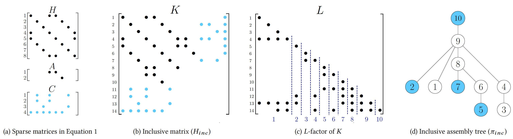

The sparsity-oriented row modification (SoMoD) algorithm in NASOQ leverages the sparsity pattern of the objective and the constraint matrices in the QP problem to build an inclusive matrix that enables efficient sparse row modification. Figure (a) shows the sparsity pattern of the objective matrix H and constraints matrices A and C in QP problem with general form of \({1 \over 2} x^THx + q^Tx \; s.t \; Ax=b, \, Cx \le d \) where b,d and q are vectors. Figure (b) shows the inclusive matrix created from matrices in Figure (a). The inclusive matrix is then permuted with a fill-reducing permutation to compute the sparsity pattern of the L-factor with minimum number of fill-ins. The sparsity pattern of the inclusive matrix’s L-factor in Figure (b) is computed and shown in Figure (c). Boundaries of supernodes are shown with dotted lines and the supernode numbers are shown below the L-factor. The corresponding inclusive (assembly) tree of the L-factor in Figure (c) is shown in Figure (d). The inclusive assembly tree along with the L-factor are used to efficiently modify successive KKT systems while solving the QP problem.
Quadratic programs (QP), minimizations of quadratic objectives subject to linear inequality and equality constraints, are at the heart of algorithms across scientific domains. Applications include fundamental tasks in geometry processing, simulation, engineering, animation and finance where the accurate, reliable, efficient, and scalable solution of QP problems is critical. However, available QP algorithms generally provide either accuracy or scalability – but not both. Some algorithms reliably solve QP problems to high accuracy but work only for smaller-scale QP problems due to their reliance on dense matrix methods. Alternately, many other QP solvers scale well via sparse, efficient algorithms but cannot reliably deliver solutions at requested accuracies. Towards addressing the need for accurate and efficient QP solvers at scale, we develop NASOQ, a new, full-space QP algorithm that provides accurate, efficient, and scalable solutions for QP problems. To enable NASOQ we construct a new row modification method and fast implementation of LDL factorization for indefinite systems. Together they enable efficient updates and accurate solutions of the iteratively modified KKT systems required for accurate QP solves. While QP methods have been previously tested on large synthetic benchmarks, to test and compare NASOQ’s suitability for real-world applications we collect here a new benchmark set comprising a wide range of graphics-related QPs across physical simulation, animation, and geometry processing tasks. We combine these problems with numerous pre-existing stress-test QP benchmarks to form, to our knowledge, the largest-scale test set of application-based QP problems currently available. Building off of our base NASOQ solver we then develop and test two NASOQ variants against best, state-of-the-art available QP libraries – both commercial and open-source. Our two NASOQ-based methods each solve respectively 98.8% and 99.5% of problems across a range of requested accuracies from 10−3 to 10−9 with average speedups ranging from 1.7× to 24.8× over fastest competing methods.
Supplemental Materials: include the setup for libraries and also the speedup breakdown per class of application.